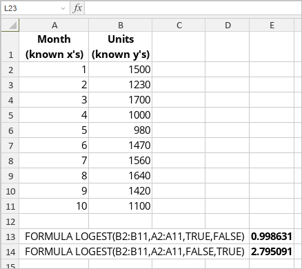

LOGEST funkcija
LOGEST funkcija je jedna od statističkih funkcija. Koristi se za izračunavanje eksponencijalne krive koja se uklapa u podatke i vraća niz vrednosti koji opisuje tu krivu.
Sintaksa
LOGEST(known_y’s, [known_x’s], [const], [stats])
LOGEST funkcija ima sledeće argumente:
| Argument | Opis |
|---|---|
| known_y’s | Skup poznatih y-vrednosti u jednačini y = b*m^x. |
| known_x’s | Opcioni skup poznatih x-vrednosti u jednačini y = b*m^x. |
| const | Opcioni argument. TRUE ili FALSE, gde TRUE ili izostavljanje argumenta normalno izračunava b, a FALSE postavlja b na 1 u jednačini y = b*m^x, a m-vrednosti odgovaraju y = m^x. |
| stats | Opcioni argument. TRUE ili FALSE, koji određuje da li se vraćaju dodatne regresione statistike. |
Napomene
Imajte na umu da je ovo niz formula. Za više informacija pročitajte članak Umetanje niz formula.
Kako primeniti LOGEST funkciju.
Primeri
Slika ispod prikazuje rezultat koji vraća LOGEST funkcija.
